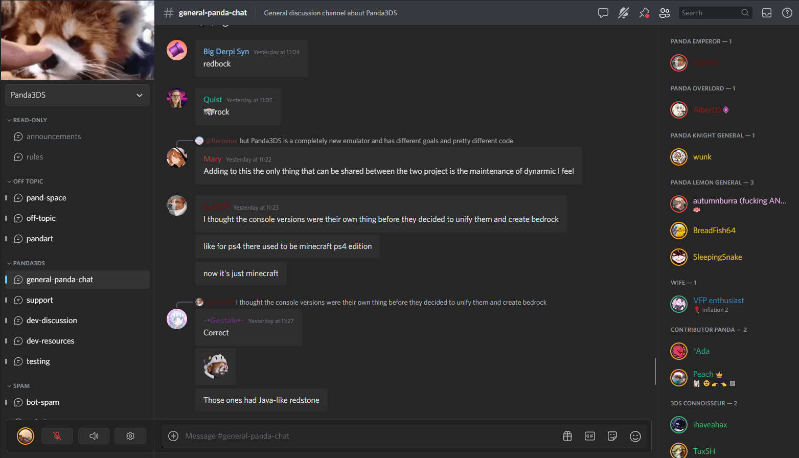
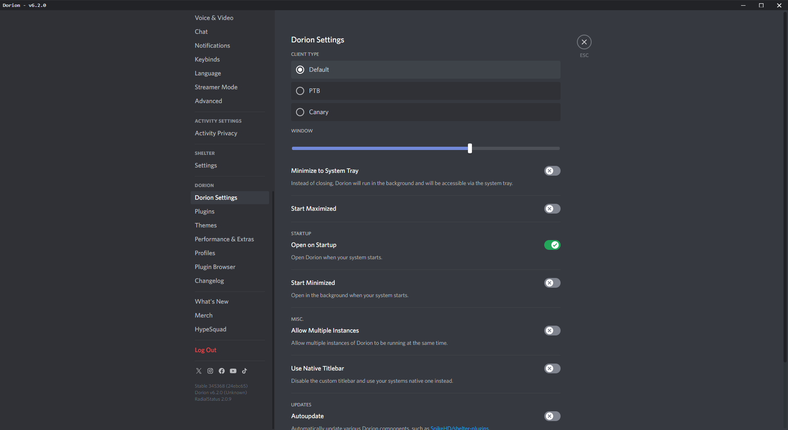
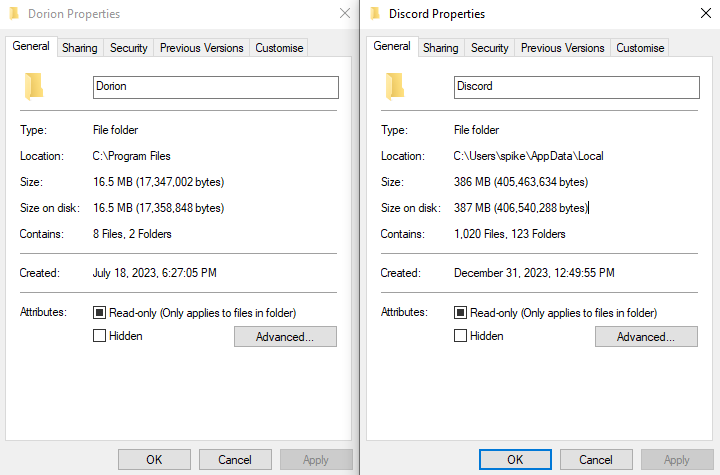

Storage-Conscience
Dorion is designed specifically to take up as little space as possible. This means no Node.js runtime, no bundled Chromium browser, and it even comes with options to clear cache after every session!Take a look for yourself, the installation files are ~11x smaller!
Snappy Startup
No updater before launch[1] and no bundled Node.js runtime, just a regular ol' Rust binary built for native x86 and ARM.[1] Dorion still has a custom updater, but it happens in the client, not before startup, preventing interruptions!
Ground-up Reimplementations
While Dorion runs the web version of Discord, it is modified and extended to include many custom, high-performance reimplementations of common desktop-only features.Some features include rich presence (via the arRPC-compatible rsRPC), global custom keybinds, and more!
System-Integrated
In order to facilitate such a low installation footprint, Dorion uses your operating system's built-in webview implementation.Windows: Microsoft WebView2
Linux: WebKitGTK
MacOS: WKWebview
Client Mod Support
Dorion uses (and requires) Shelter to facilitate backend/frontend communication and various UI elements.Not only this, but Dorion comes integrated with Vencord and Equicord, ready for when you want them.
Performance Choice
Because Dorion comes with many extra features, most are optional and can be disabled. This way, if you're on a low-end system for example, you can completely disable features you don't use!Most large features, such as RPC, are even disabled by default.

Dorion with the Fluent and RadialStatus themes.

Dorion and it's various settings.

Dorion vs. Discord size comparison.